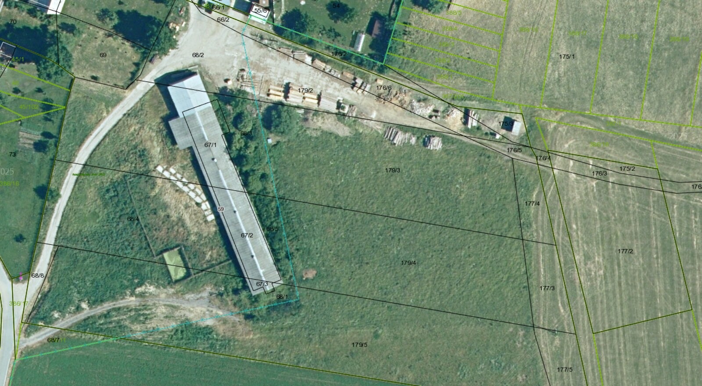

Pozemky a parcely
Všetky parcely tvoria jeden súvislý blok v katastrálnom území Pongrácovce (okres Levoča) — od dvora pri budove až po ornú pôdu. Údaje vychádzajú z katastra nehnuteľností.

Letecká snímka areálu — hranice súvislého bloku vyznačené červenou čiarou.

Katastrálna mapa s číslami parciel — budova s.č. 59 stojí na parcelách 67/1, 67/2 a 67/3.
| Parcela č. | Výmera | Druh pozemku | Poznámka |
|---|---|---|---|
| 67/1 | 385 m² | Zastavaná plocha a nádvorie | pod hospodárskou budovou |
| 67/2 | 395 m² | Zastavaná plocha a nádvorie | pod hospodárskou budovou |
| 67/3 | 30 m² | Zastavaná plocha a nádvorie | pod hospodárskou budovou |
| 68/3 | 2 133 m² | Zastavaná plocha a nádvorie | dvor |
| 68/4 | 2 162 m² | Zastavaná plocha a nádvorie | dvor |
| 68/5 | 264 m² | Zastavaná plocha a nádvorie | dvor |
| 175/2 | 118 m² | Trvalý trávny porast | |
| 176/3 | 188 m² | Zastavaná plocha a nádvorie | účelová komunikácia |
| 176/5 | 93 m² | Zastavaná plocha a nádvorie | účelová komunikácia |
| 177/2 | 2 029 m² | Trvalý trávny porast | |
| 177/3 | 444 m² | Trvalý trávny porast | |
| 177/4 | 316 m² | Trvalý trávny porast | |
| 179/3 | 3 170 m² | Orná pôda | |
| 179/4 | 2 835 m² | Orná pôda | |
| Spolu | 14 562 m² | ≈ 1,46 hektára v jednom súvislom bloku | |
Stavba: hospodárska budova (súpisné číslo 59) so zastavanou plochou 810 m² stojí na parcelách 67/1, 67/2 a 67/3. K nej patrí kovový prístrešok s plochou približne 130 m², ktorý nie je zameraný v katastri.
Súhrn plôch: krytá plocha 810 m² (budova) + 130 m² (prístrešok) = 940 m² · pozemky spolu 14 562 m², z toho dvory a komunikácie ~4 840 m², trávne porasty ~2 900 m², orná pôda ~6 000 m² a plocha pod budovou 810 m².